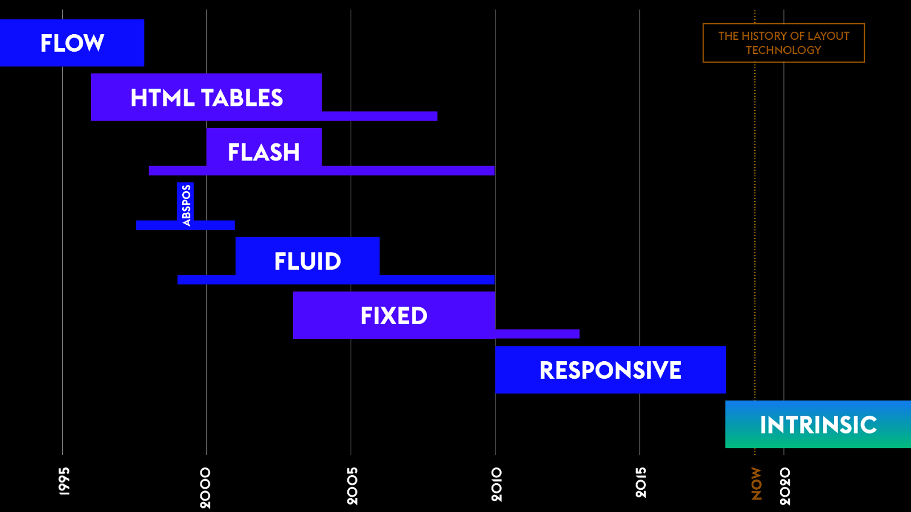

Intrinsic Web Design

‹The History of Layout Technology› von Jen Simmons
‹Intrinsic› / ‹new Responsive›
- Intrinsic: belonging to the nature of the web
^
- The new responsive^
Intrinsic
Contracting & Expanding
- Wrap & Reflow
- Enlarge & Shrink
- Add & Remove Whitespace
(vertical centering, grid placement, intentional) ^ - Slide & Overlay
(grid placement, filters, blend-modes) ^
Flexibility
- Fixed
- Fluid Horizontally
- Vertical fluidity ^
- Aspect Ratio, Object Fit ^
Viewport
- Fluid
- Fixed
- Responsive
- Intrinsic
(vertical centering, viewport units, the fold) ^/^
- Layers
- Container Queries & Units
- Subgrid
- CSS Grid
- Flexbox
- Writing Modes
- Multiple-column
- Transforms
- Media Queries
- Logical Properties
- Viewport units
- Object Fit
- Clip-path
- Shape-outside
- Initial-letter
- Flow
- Overflow
- Floats
- Block
- Inline
- Inline-block
- Display: table
- Margin & Negative margins
- Padding
- Positioning
- ...
The new responsive
^
Today
Responsive to
the user
- prefers-reduced-motion
- prefers-contrast
- prefers-reduced-transparency
- prefers-color-scheme
- inverted-colors
- ...
Media Queries
getAbstract: Actionbar
The World of Units
^^
- fixed
- min-content, max-content, fit-content
- %
- FR units
- minmax()
- auto
- Viewport units
- Container units
- ch / ex
More / Notes
- @container ^
- @layer^
- CSS Math^
- Relative to Relativity^